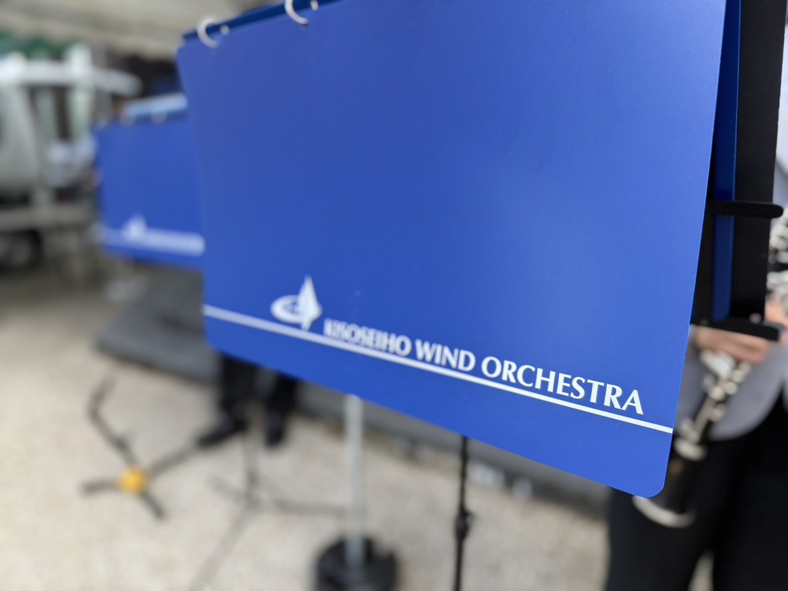
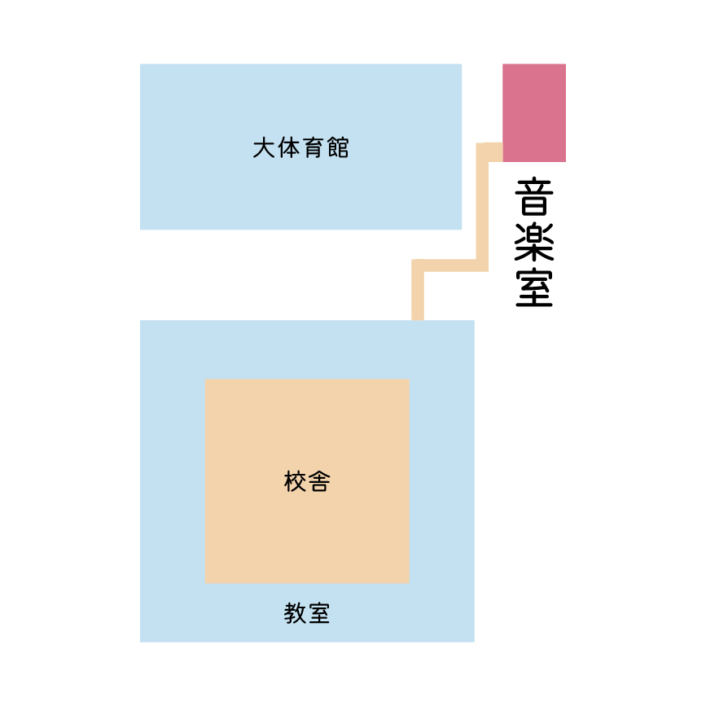

木曽青峰高校 吹奏楽部2027
01/08
01 ABOUT
16MEMBERS

木曽青峰高校吹奏楽部は1年生7人、2年生6人、顧問3人、+α？？の計16人で活動しています。新体制になり、夏のコンクール東海大会出場を目指し、13人という少人数バンドですが楽しく活動してます！
71年生
62年生
3顧問
02/08
02 WEEKLY
1週間の活動
月
4:30~6:30 (理普7限あり)
火・水
3:30~5:30
木
OFF
金
3:30~5:30
土
8:30~11:30
日
OFF
03/08
03 YEAR
年間スケジュール
（予定）は昨年度の予定。日付は今年度決まっているものです。横にスクロールできます →
04APRIL
入学式
部活動 見学・体験
（大通寺での演奏）
05MAY
新入生歓迎会
06JUNE
合同演奏会
（三岳里テラスさんでの演奏）
07JULY
蒼陵祭
25日 定期演奏会
08AUGUST
吹奏楽コンクール（長野県大会）
3年生引退
09SEPTEMBER
木曽郡吹奏楽フェスティバル
（木曽の手仕事市）
10OCTOBER
（JA祭り）
11NOVEMBER
（木曽病院祭）
12DECEMBER
アンサンブルコンテスト
03MARCH
卒業式演奏
長野県吹奏楽フェスティバル
04/08
04 RESULTS
実績
金賞
吹奏楽コンクール 長野県大会にて受賞。昨年度に引き続き、部員一同で掴んだ結果です。
奨励賞吹奏楽コンクール 長野県大会
???賞アンサンブルコンテスト 中信大会
05/08
05 Q&A
よくある質問
新
僕、未経験なんですが、、
先
未経験でも大歓迎、一緒に上達しましょう
既読
新
楽器を持っていなくても大丈夫ですか？
先
はい、学校の楽器を使用している部員がほとんどです
既読
新
テスト期間中はお休みですか？
先
一週間前から休みになります
06/08
06 VISIT
見学・体験入部
- 日程（未定）
- 場所音楽室
- 持ち物（未定）

※ 現在、校舎全体の地図を表示しています。音楽室の正確な位置が分かるようになったら、入り口からの案内図に差し替えます。
入部、お待ちしています
楽器の経験があってもなくても、吹奏楽が初めてでも大丈夫です。
音を合わせる楽しさを、ここで一緒に見つけましょう。
見学だけでも、いつでも歓迎です。
07/08
07 INSTRUMENTS
楽器紹介
木管・金管・パーカッション、いろいろな楽器があります。どれが気になるか、丸いアイコンを押すか、下のボタンでくじを引いてみてください。
08/08